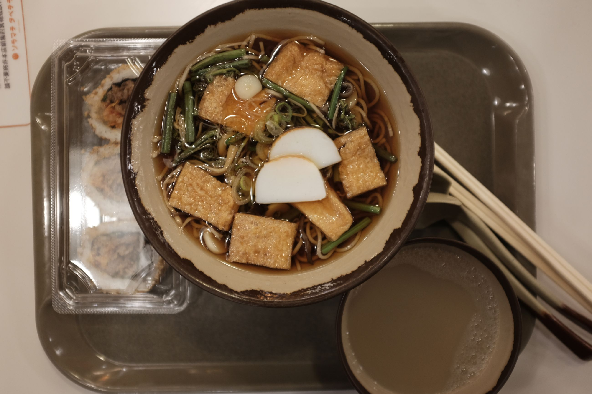
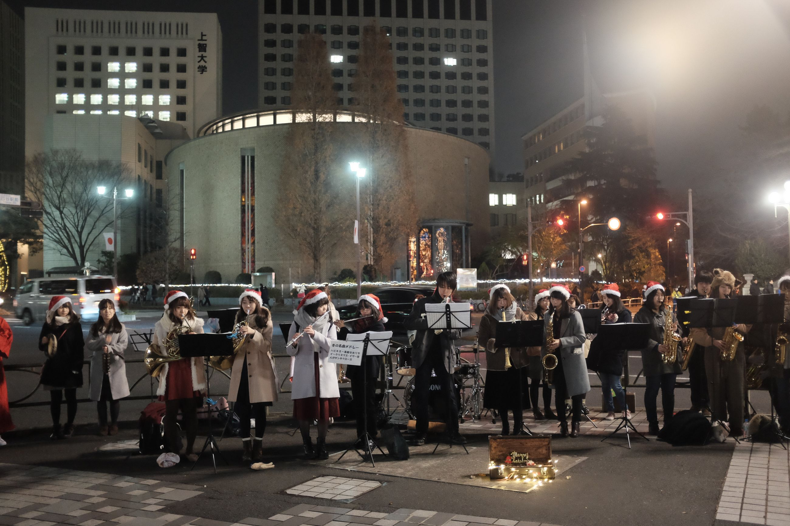
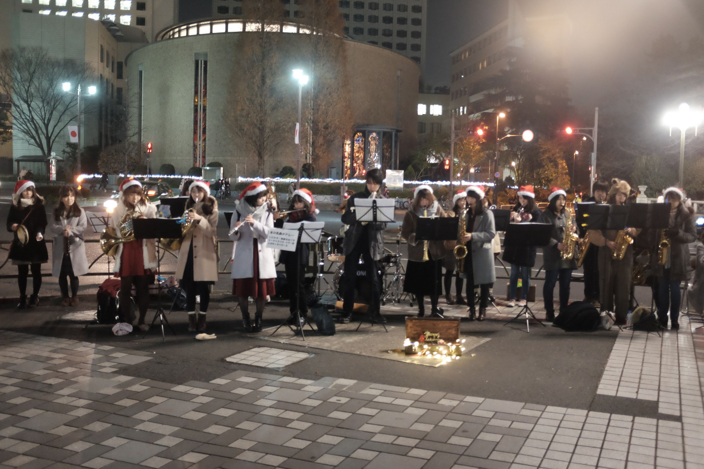
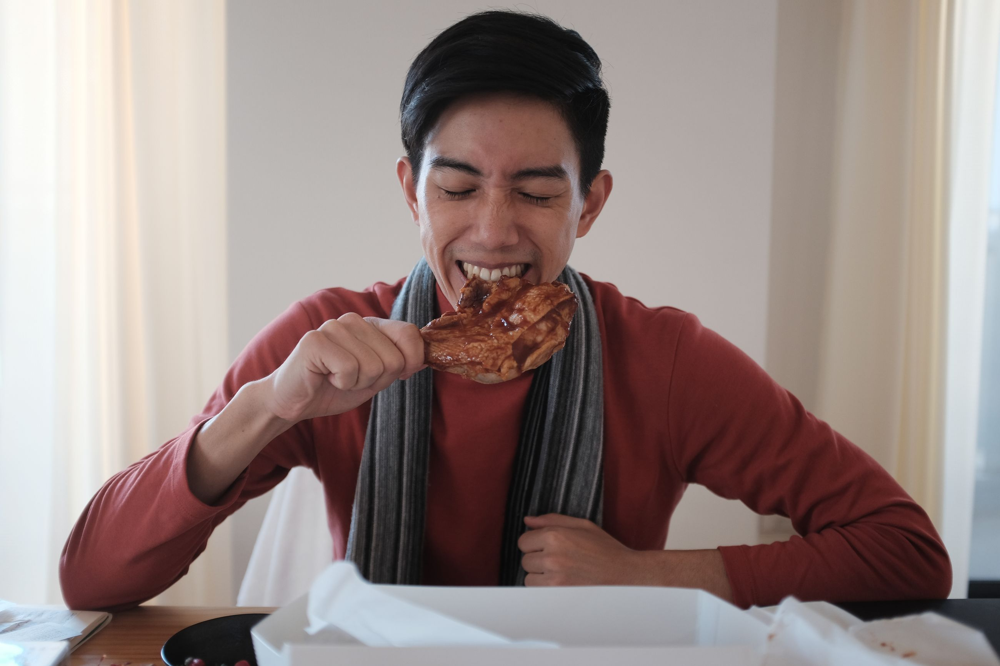
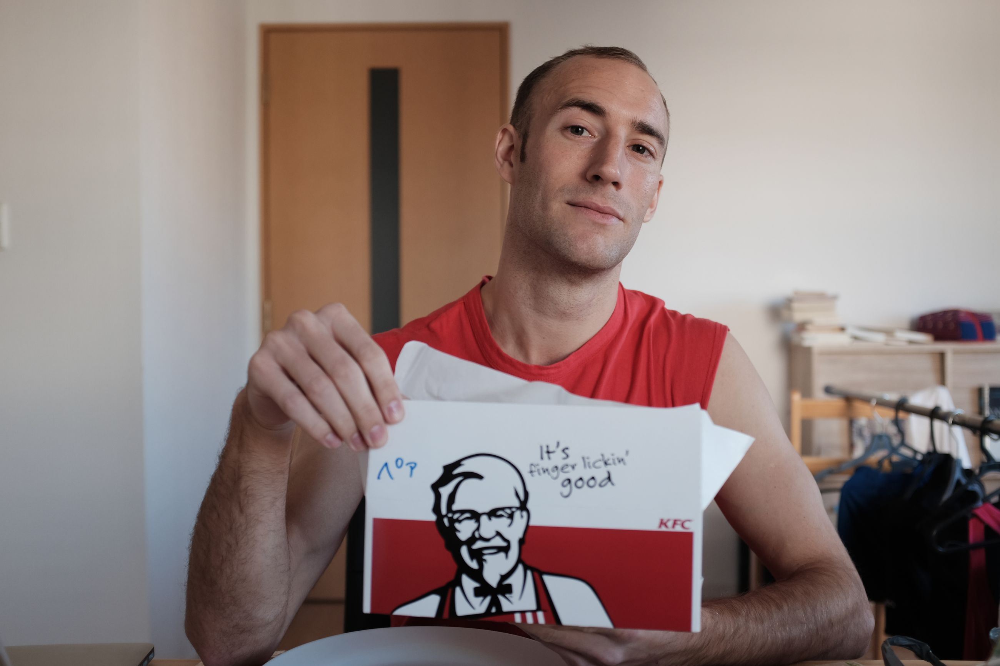

After Nara, we made our way back to Tokyo. We arrived at night.
I'm becoming more enamored with this city, with the lights that blaze through the darkness of the night, and the food that warms our bellies. Outside the Japanese rail station, a band wearing santa hats has opened up a small streetside concert to bring in the holiday spirit for businessmen who are rushing to and fro. They stop to listen and then are on their way back home.
  
Christmas in my childhood was all about Christmas Eve. We would have our family dinner, and right at midnight we would open presents. I never thought much about how having Chinese hot pot and Western turkey was such a unique way to celebrate, I'd always just thought that was normal. In Japan, due to a KFC commercial couple decades ago, Japanese people started celebrating Christmas by buying KFC and having their lunch with fried chicken. Following local custom, we pre-ordered our chicken on Christmas Eve so that we could pick it up on Christmas.
What am I thankful for this year? I am thankful that my family supported me to live abroad so that I could have this experience. I wouldn't even have guessed I would be in Japan for Christmas, but here I am with Thorin. We pick up our chicken and eat it -- the only time of year Thorin is willing to eat KFC -- because it's culturally relevant. I look across and am thankful for him for supporting me to go to Hong Kong in search of my own career path. I call my father and stepmom and wish them a Merry Christmas, and then call my mother and stepdad doing the same. I'm thankful that I did not just have one loving family, but two, growing up. Somewhere in the depths of fried skin, oil, and meat, as my teeth sunk in to the calories, I'm filled with gratitude. Merry Christmas. Gym tomorrow.
 